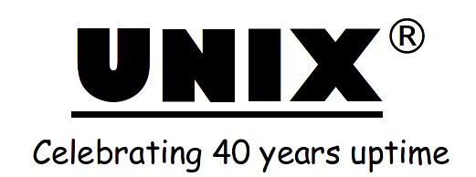

Unix is a family of multitasking, multiuser computer operating systems that derive from the original AT&T Unix, development starting in the 1970s at the Bell Labs research center by Ken Thompson, Dennis Ritchie, and others.[3] Initially intended for use inside the Bell System, AT&T licensed Unix to outside parties in the late 1970s, leading to a variety of both academic and commercial Unix variants from vendors including University of California, Berkeley (BSD), Microsoft (Xenix), IBM (AIX), and Sun Microsystems (Solaris). In the early 1990s, AT&T sold its rights in Unix to Novell, which then sold its Unix business to the Santa Cruz Operation (SCO) in 1995.[4] The UNIX trademark passed to The Open Group, a neutral industry consortium, which allows the use of the mark for certified operating systems that comply with the Single UNIX Specification (SUS). As of 2014, the Unix version with the largest installed base is Apple's macOS.[5]
Unix systems are characterized by a modular design that is sometimes called the "Unix philosophy". This concept entails that the operating system provides a set of simple tools that each performs a limited, well-defined function,[6] with a unified filesystem as the main means of communication,[3] and a shell scripting and command language to combine the tools to perform complex workflows. Unix distinguishes itself from its predecessors as the first portable operating system: almost the entire operating system is written in the C programming language, thus allowing Unix to reach numerous platforms.[7]
Source: Wikipedia click here
"With ordinary talent and extraordinary perseverance, all the things are attainable"- Thomas F. Buxton